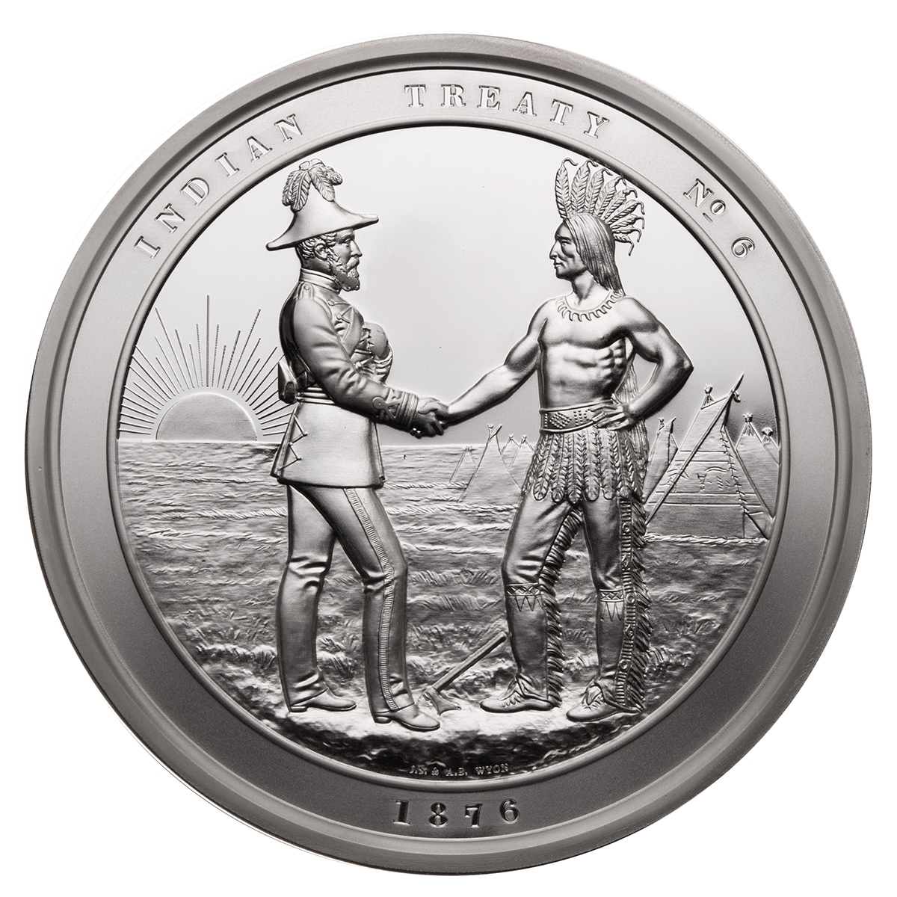
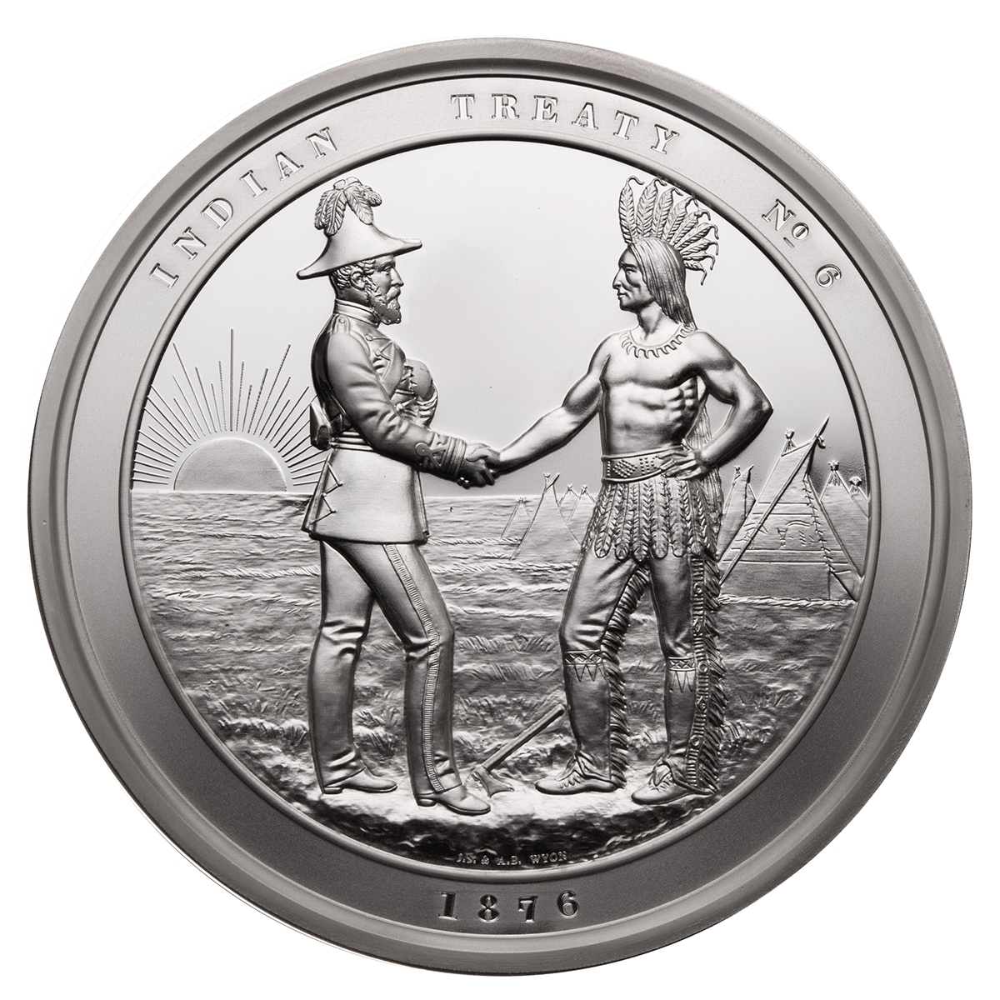

Welcome to Treaty 1
 


What is included in Treaty 1?
Each band received a large enough reserve to provide 160 acres for each family of five (or in proportion for smaller or larger families). Each person was given a one-time payment of three whole dollars, and a yearly payment of $15 per family of five. The government also agreed to have a school on each reserve and to forbid the introduction or selling of liquor on the reserves. For the Anishinaabe and Swampy Cree, they were required to “cede, release, surrender, and yield up to her Majesty the Queen” a tract of land described in detail in the treaty: a large amount of present-day southeast and south-central Manitoba, which includes the Red River Valley, and stretching north to the low parts of Lake Manitoba and Lake Winnipeg and along the Assiniboine River to towns in Portage la Prairie and Brandon.